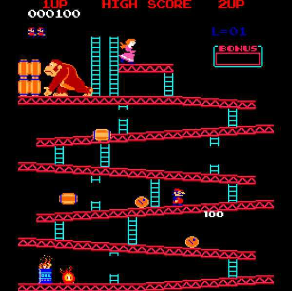
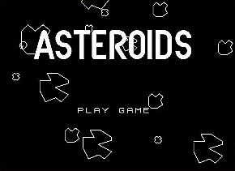
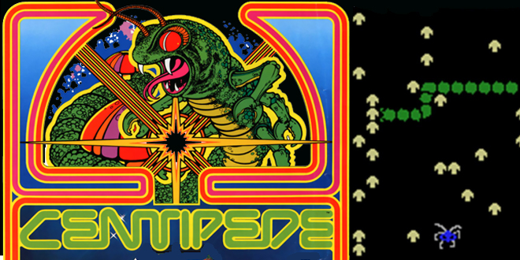
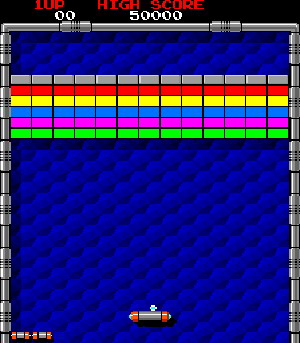

Juegos Arcade
aca podras jugar distintos juegos acarde que ya son casi imposibles de conseguir para disfrutar la era de los 70 y 80, con un diseño simple pero con gran distracción gracias a sy forma de juego y el desarrollo que llevna estos
Pac-Man
juego de los años de los 80, es un videojuego arcade que consiste en comerce todos los puntitos amarillos de la pantalla pero eso no e stodo ya que hay unos enemogos que te impediran que lo agas y a unica manera de acabar con elleos durante uyn tiempo es comiendo una pastilla de poder que es la que te brinda , un poder para poder comerte a los fantasmitas enemigos.

Space Invaders
Juego en el que consiste en disparar y destruir todas las naves enemigas con el objetivo llegar ala nave final para poder gnar y acabar con el juego y con la invacion alienigena

Donkey Kong
Este juego de arcade consiste en ir saltando por unas plataformas mientras que donkey Kong lanza barriles poruqe a secuestrado ala princesa y mario quiere recuperarla cada vez que avanzas de nivel sera mas dificil y mas rapido la reaccion de donkey kong

Asteroids
Este juego consiste en destruir todos los asteroides evitando chocar con los fragmentos que salen de estos mismos asteroides, el objetivo es lograr destruir la mayor cantidad de asteroides

Centipede
este juego consiste de un gusano que se desplaza por medio de un laberinto de hongos, cuando le disparas a el gusano en la cabeza aparecera un hongo y si le disparas a el cuerpo aparecera otro gusado asi que tendras que buscar la forma de destruir a los gusanos sin que salgan mas de ellos

Arkanoid
El jeugo consiste en destruir bloques para pasar al siguiente nivel y hay una plataforma en la parte inferior que hace rebotar a la bola para romper dichos bloques
